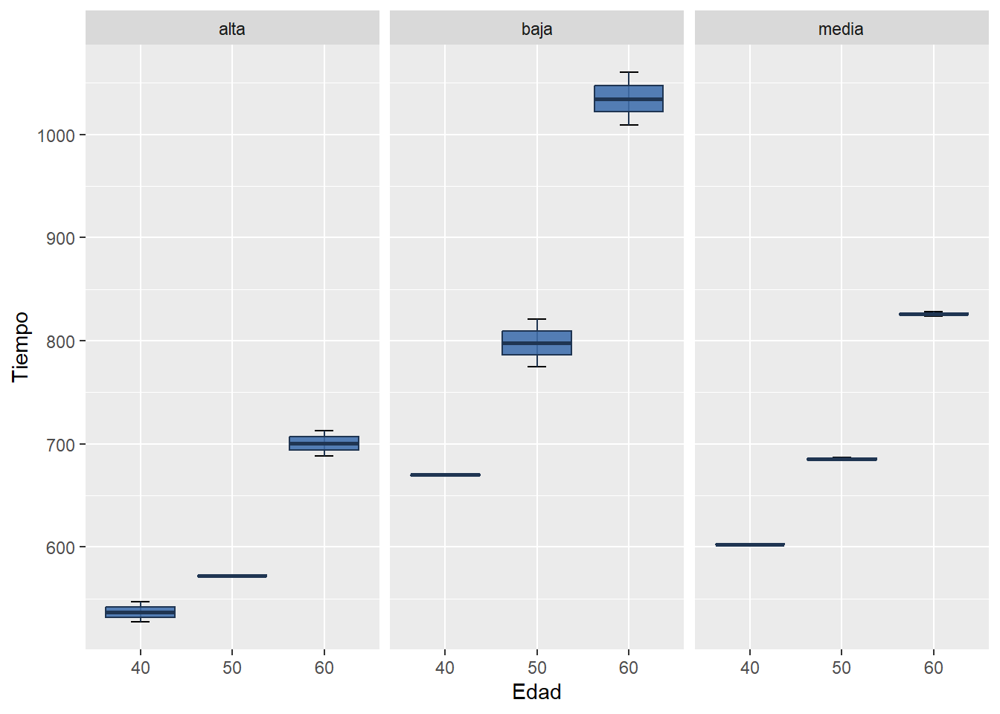

Dos o más criterios de clasificación cruzados con interacción
Análisis en el que se presentan dos factores de clasificación (con dos o más niveles cada uno). El término cruzado indica que cada nivel de un factor puede combinarse con cada nivel del otro factor. El objetivo es conocer si estos factores influyen en el comportamiento de una variable (respuesta) continua y gaussiana a través de un Análisis de la Variancia (ANOVA).
Steel y Torrie (1980, págs. 217-218) informaron datos (cortesía de A.c. Linnerud, Universidad Estatal de Carolina del Norte) sobre los tiempos (en segundos) para completar un recorrido de 1,5 millas. Todos los corredores eran hombres clasificados en tres grupos de edad y en tres categorías de fitness.
Factor 1: Grupo etario (40-50-60)
Factor 2: Categoría de fitness (baja-media-alta)
# Libreríaslibrary(cowplot)library(tidyverse)
── Attaching core tidyverse packages ──────────────────────── tidyverse 2.0.0 ──
✔ dplyr 1.1.4 ✔ readr 2.1.4
✔ forcats 1.0.0 ✔ stringr 1.5.1
✔ ggplot2 3.4.4 ✔ tibble 3.2.1
✔ lubridate 1.9.3 ✔ tidyr 1.3.0
✔ purrr 1.0.2
── Conflicts ────────────────────────────────────────── tidyverse_conflicts() ──
✖ dplyr::filter() masks stats::filter()
✖ dplyr::lag() masks stats::lag()
✖ lubridate::stamp() masks cowplot::stamp()
ℹ Use the conflicted package (<http://conflicted.r-lib.org/>) to force all conflicts to become errors
library(agricolae)library(emmeans)
head(base_fitness)
edad categoria tiempo
1 40 baja 669
2 40 baja 671
3 40 media 602
4 40 media 603
5 40 alta 527
6 40 alta 547
Se estudian medidas descriptivas y gráficos de boxplots y perfiles para los corredores según edad y categoría.
Warning: There were 9 warnings in `summarise()`.
The first warning was:
ℹ In argument: `media = mean(tiempo)`.
ℹ In group 1: `edad = "40"`, `categoria = "alta"`.
Caused by warning in `mean.default()`:
! argument is not numeric or logical: returning NA
ℹ Run `dplyr::last_dplyr_warnings()` to see the 8 remaining warnings.
`summarise()` has grouped output by 'edad'. You can override using the
`.groups` argument.
# A tibble: 9 × 5
# Groups: edad [3]
edad categoria n media desvio
<chr> <chr> <int> <dbl> <dbl>
1 40 alta 2 NA 14.1
2 40 baja 2 NA 1.41
3 40 media 2 NA 0.707
4 50 alta 2 NA 1.41
5 50 baja 2 NA 32.5
6 50 media 2 NA 2.12
7 60 alta 2 NA 17.7
8 60 baja 2 NA 36.1
9 60 media 2 NA 2.83
# Boxplots. Ojo! Sólo hay dos observaciones por grupoggplot(base_fitness, aes(x = edad, y = tiempo)) +stat_boxplot(geom ="errorbar", width =0.2) +facet_wrap(~categoria) +geom_boxplot(fill ="#4271AE", colour ="#1F3552", alpha =0.9) +labs(y="Tiempo", x="Edad")

# Gráfico de perfiles (para evaluar interacción entre factores)base_fitness %>%group_by(edad, categoria) %>%summarise(media =mean(tiempo) ) %>%ggplot(aes(x=edad,y=media,group=categoria,color=categoria)) +geom_line() +theme_bw() +labs(y="Media", x="Edad",color="Categoria")
Warning: There were 9 warnings in `summarise()`.
The first warning was:
ℹ In argument: `media = mean(tiempo)`.
ℹ In group 1: `edad = "40"`, `categoria = "alta"`.
Caused by warning in `mean.default()`:
! argument is not numeric or logical: returning NA
ℹ Run `dplyr::last_dplyr_warnings()` to see the 8 remaining warnings.
`summarise()` has grouped output by 'edad'. You can override using the
`.groups` argument.
En este modelo, a través de la interacción, se postula que el efecto de la edad del corredor en el tiempo que tarda en alcanzar las 1.5 millas depende de su categoría.
A continuación, se muestra la tabla ANOVA:
# Tabla ANOVAanova <-aov(tiempo~edad*categoria, base_fitness)summary(anova)
El test de hipótesis para responder al efecto interacción se plantea como: \(H_0)\) No hay interacción versus \(H_1)\) Hay interacción. Que no haya interacción es que el efecto edad es el mismo para cualquier categoría.
En base a la evidencia muestral y con un nivel de significación del \(5\%\), se rechaza la hipótesis nula, es decir, hay efecto interacción entre edad y categoría. El efecto de la edad sobre el cambio del tiempo en realizar las 1.5 millas de los corredores depende de la categoría en la que se encuentran.
Como la interacción del modelo resultó significativa, no se prueban los efectos principales.
Comparaciones múltiples
Para comparar los niveles de edad dentro de cada categoría y viceversa, planteamos las siguientes comparaciones:
joint_tests(modelo, by ="edad")
edad = 40:
model term df1 df2 F.ratio p.value
categoria 2 9 27.565 0.0001
edad = 50:
model term df1 df2 F.ratio p.value
categoria 2 9 79.586 <.0001
edad = 60:
model term df1 df2 F.ratio p.value
categoria 2 9 177.401 <.0001
joint_tests(modelo, by ="categoria")
categoria = alta:
model term df1 df2 F.ratio p.value
edad 2 9 46.194 <.0001
categoria = baja:
model term df1 df2 F.ratio p.value
edad 2 9 213.133 <.0001
categoria = media:
model term df1 df2 F.ratio p.value
edad 2 9 79.551 <.0001